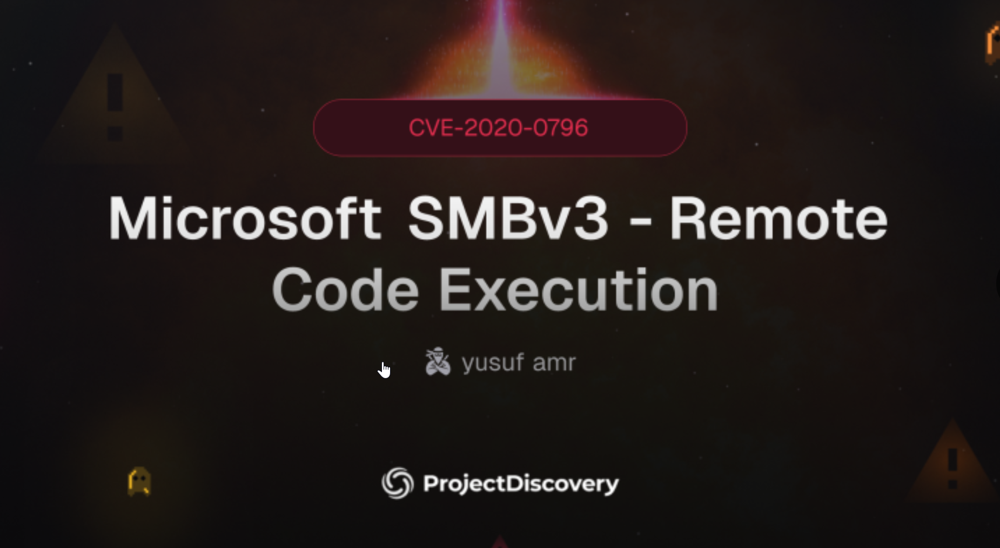
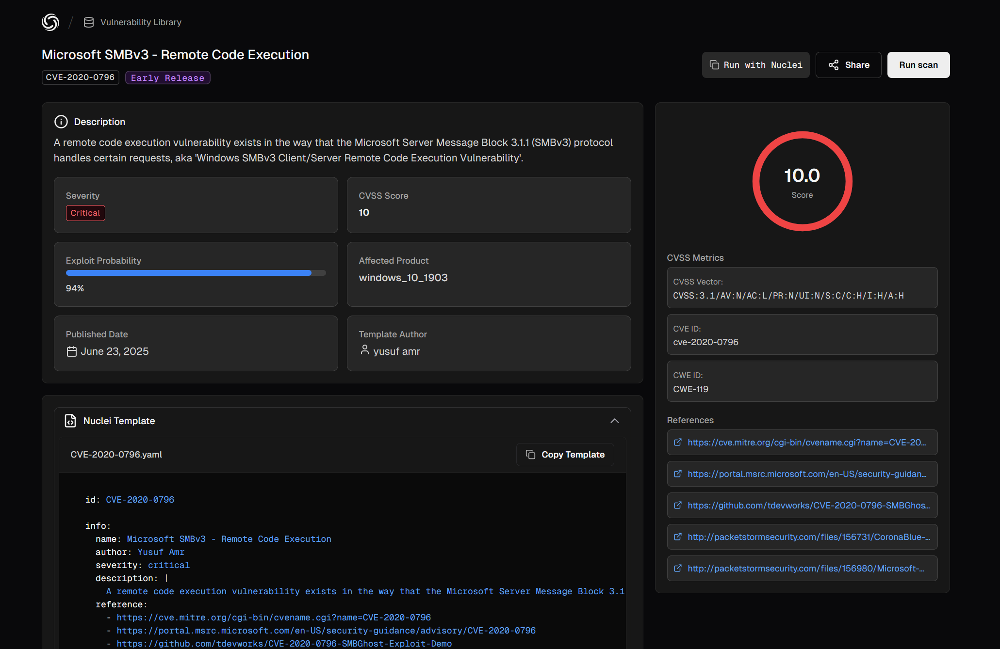
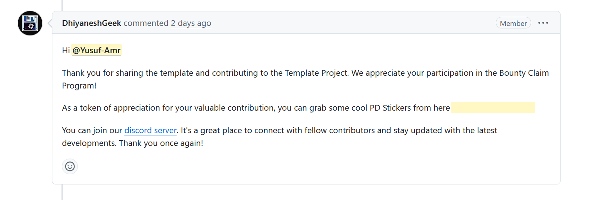

Background In early 2020, Microsoft disclosed a critical vulnerability in SMBv3 (Server Message Block) protocol, identified as CVE-2020-0796. This vulnerability, commonly known as "SMBGhost", could allow remote code execution, making it a high-impact risk for organizations relying on Windows systems. My Contribution As part of the ProjectDiscovery community, I recently contributed an official Nuclei detection template for CVE-2020-0796. The template enables security researchers and organizations to quickly detect and assess whether their systems are vulnerable. This contribution was reviewed, approved, and published by the ProjectDiscovery team, now available as an Early Release for all Nuclei users.Happy to see it listed on the official ProjectDiscovery website as the current detection for this vulnerability!
You can check it out here:
- Official ProjectDiscovery Listing: https://cloud.projectdiscovery.io/library/CVE-2020-0796


Why is this important?- Rapid Detection: Organizations can quickly test their infrastructure for CVE-2020-0796 exposure.
- Community-Driven Security: Contributions like these strengthen the open-source security ecosystem.
- Proactive Defense: Early and reliable detection reduces exploitation risk in production systems.
Example snippet from the detection:
id: CVE-2020-0796
info:
name: SMBv3 RCE Vulnerability (SMBGhost)
author: Yusuf Amr
severity: critical
description: Detects Microsoft SMBv3 Remote Code Execution vulnerability
requests:
- type: network
...- Protocol Complexity: SMB is a complex protocol; crafting minimal detection logic required careful packet-level handling.
- Accuracy: Ensuring false positives were avoided was a key part of the design.
- CVE-2020-0796 Advisory: Microsoft Security Guidance